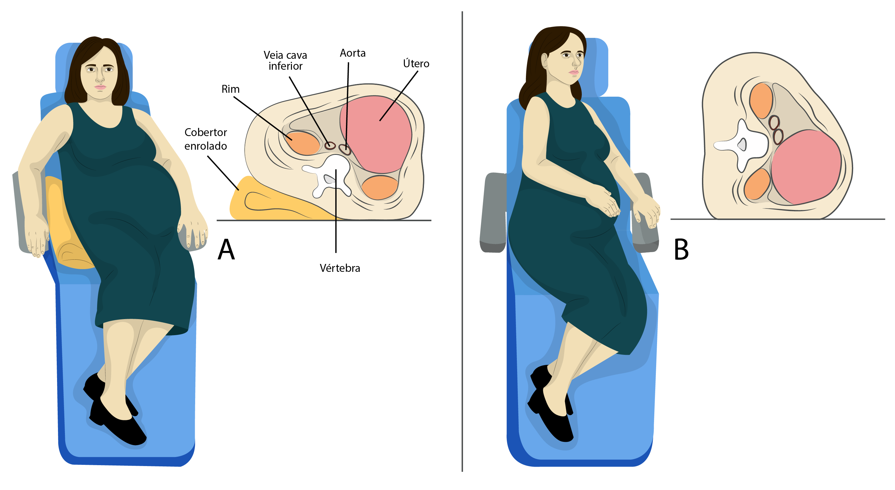

Posicionamento de atendimento da gestante na cadeira
Posicionamento De Gestante em Cadeira Odontológica a partir do terceiro trimestre gestacional.
No último trimestre da gravidez, o posicionamento na cadeira do atendimento odontológico pode ser
desconfortável, porém não existe contraindicação. Não existem restrições para os tratamentos dentários
em gestantes.
O ideal é de decúbito lateral para esquerda em um ângulo de aproximadamente 15°. O cirurgião-dentista
deverá elevar ligeiramente o encosto e pedir para a gestante se virar sobre o braço esquerdo.Isso
pode ser feito sem inclinar o encosto, mas na posição supina, apoiando um encosto (seja cobertor,
coxim de retenção) nas costas, no lado direito da gestante, conduzindo assim o peso fetal com
deslocamento para a esquerda e assim não comprimindo a veia cava.
Sobressaltando a preocupação das mulheres em relação ao bem-estar do bebê, no contexto geral não há
posições que sejam perigosas, pois a criança está envolta pelo útero. Mas alguns pontos podem ser
incômodos para as mães. O ato de dormir de barriga para cima, por exemplo, pode ser extremamente
incomodo porque o peso do útero causa falta de ar e mal-estar.
Imagem Posicionamento Adequado /Confortável para atendimento odontológico á partir do 3º trimestre
Bibliografia
Sites acessados:
Conselho Federal de odontologia (Acesso em 10/03- 14:20 )
unasus.gov.br (Acessado em 10/03 14:45)
Imagem
unasus.gov.br (Acessado em 10/03 14:45)